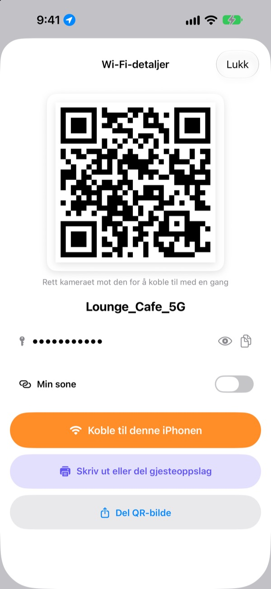
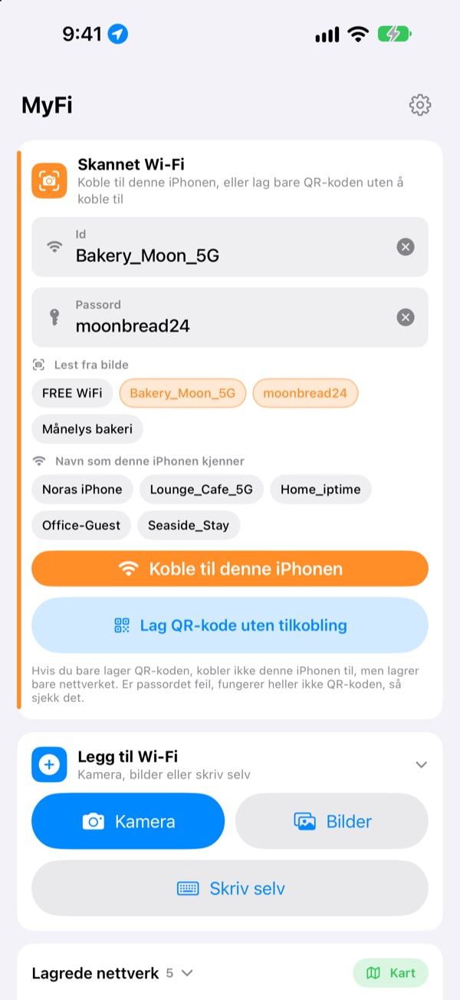
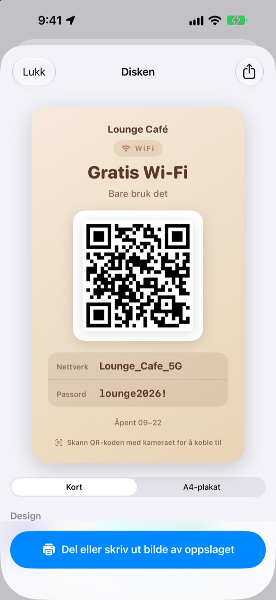
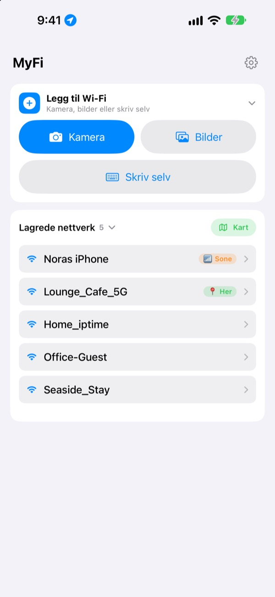

Slutt å lese opp passordet.
Vis en QR-kode.
Venner peker bare kameraet mot den, så er de på. Oppslaget på kaféveggen? Ett bilde, og denne iPhonen kobler seg til. Ingen tastefeil fra avskrift.
Alle funksjoner er gratis. iPhone med iOS 17 eller nyere.

Lag en QR-kode for ditt Wi-Fi
Endre navn eller passord, så oppdateres oppslaget med en gang. Pek kameraet på en telefon mot det, så får du et ekte spørsmål om å koble til.
«Hva var Wi-Fi-passordet igjen?» Hvor mange ganger i dag?
Du leser det opp og blander store og små bokstaver. Du skriver av oppslaget på veggen og forveksler 0 og O. Så forklarer du alt på nytt. MyFi gjør det til ett bilde og én QR-kode.
Ta et bilde, så er du på
Ta bilde av Wi-Fi-oppslaget eller kvitteringen, eller velg et bilde. MyFi leser nettverksnavn og passord og kobler til denne iPhonen. Har oppslaget også en QR-kode, leses den først, så opplysningene blir helt riktige.
Er teksten utydelig, drar du bare en bit fra bildet inn i feltet for navn eller passord.

Lag og skriv ut et gjesteoppslag
Velg ett av 7 temaer, og legg til navn, logo og linjer som åpningstider. Velg kort eller stående A4-plakat, lagre det som bilde, eller skriv det ut med en gang via AirPrint.
Ha flere oppslag, ett for hvert sted eller bord, og endre dem når du vil.

Steder du kommer tilbake til, står øverst
Nettverk du kobler til eller deler, lagres sammen med stedet. Kommer du tilbake, står nettverket øverst, og alle lagrede steder vises på et kart.
Legg QR-koden til nettet du deler mest som widget på Hjem-skjermen eller låseskjermen. Spør en gjest, viser du bare skjermen.

I gang på tre trinn
- 1
Åpne appen
Den spør om posisjon én gang, fordi iOS bare forteller navnet på nåværende Wi-Fi til apper med den tilgangen.
- 2
Ta bilde eller skriv
Ta bilde av et oppslag, eller skriv inn passordet til ditt eget Wi-Fi én gang.
- 3
Koble til eller vis
Koble til denne iPhonen, eller vis QR-koden til den andres kamera.
Hvor du finner hva
- Koble til fra et bilde av et oppslag
Legg til Wi-Fi, såKameraellerBilder, såKoble til denne iPhonen- Skriv inn opplysningene selv
Legg til Wi-Fi, såSkriv selv- Bare lage en QR-kode
Lag QR-kode uten tilkobling- Sende QR-koden i en melding
- Trykk på et lagret nettverk, så
Del QR-bilde - Gjesteoppslag
- Trykk på et lagret nettverk, så
Skriv ut eller del gjesteoppslag - Din egen sone som QR-kode
- Trykk på et lagret nettverk og slå på
Min sone - Koble til eller del med ett sveip
- Sveip til høyre i listen for å koble til, til venstre for å dele
- Se lagrede steder
Kart, ved siden avLagrede nettverk- QR-kode på Hjem-skjermen
- Hold fingeren på Hjem-skjermen og legg til MyFi-widgeten
Wi-Fi-QR
Du kan også åpne QR-koden direkte med Siri eller Snarveier-appen.
Alle funksjoner er gratis
Gratis
- Koble til Wi-Fi fra et bilde
- Lag QR-koder og del dem som bilde
- Gjesteoppslag i 7 temaer, som kort eller A4-plakat, utskrift med AirPrint
- Widgeter for Hjem-skjerm og låseskjerm
- Kart over lagrede Wi-Fi-nett
- Ingen reklame, ingen konto
Tips (frivillig)
- Liker du appen, kan du støtte utviklingen med et tips
- Tips låser ikke opp noe. Uten tips har du fortsatt alle funksjoner
Et tips er en liten engangsbetaling.
Ingen abonnement og ingen betalte funksjoner.
Vanlige spørsmål
Hvorfor må jeg skrive passordet selv?
iOS lar ingen apper lese Wi-Fi-passordene som er lagret på enheten. Derfor finner MyFi nettverksnavnet, og du skriver passordet én gang. Etter det bruker appen det lagrede.
Jeg ser ikke navnet på Wi-Fi-nettet jeg er koblet til.
iOS gir bare Wi-Fi-navnet til apper med posisjonstilgang. Tillat MyFi under Innstillinger › Personvern og sikkerhet › Posisjonstjenester. Posisjonen brukes bare til å lese nettverksnavnet og kjenne igjen steder du kommer tilbake til.
Navn eller passord ble lest feil.
Gå nærmere, og ta bildet rett. Er det fortsatt feil, dra riktig bit fra bildet inn i feltet eller rett det for hånd. Har oppslaget en Wi-Fi-QR-kode, leser MyFi den og fyller inn de nøyaktige opplysningene.
Hvilke oppslag kan den lese?
Den gjør det best med oppslag på engelsk eller koreansk med merkelapper som ID, PW, SSID, Network eller Password. Selv uten merkelapper finner den linjen som ser ut som et passord. En Wi-Fi-QR-kode på oppslaget leses nøyaktig uansett språk.
Hvordan kobler andre seg til med QR-koden min?
På iPhone og Android peker de bare det innebygde kameraet mot koden og trykker på spørsmålet om å koble til. De trenger ingen app.
Kan andre se passordet mitt?
QR-koden inneholder vanlige Wi-Fi-påloggingsopplysninger. Du velger alltid selv om du deler den, og du kan skjule passordet på gjesteoppslaget.
Hvorfor kan jeg ikke koble til min egen sone?
Den personlige sonen på iPhonen er selve telefonen, og den kan ikke koble til seg selv. Slå på Min sone, så behandler MyFi den som en QR-kode du kan dele ut.
Hvor havner Wi-Fi-opplysningene mine?
MyFi har ingen server. Nettverksnavn, passord, resultater fra bilder og posisjoner behandles og lagres bare på enheten din. Ingen reklame eller sporing. Appen sender bare anonym bruksstatistikk og feilrapporter til Apple iCloud, så den kan rettes.
Hvilke enheter fungerer den på?
iPhone med iOS 17 eller nyere. Appen finnes på 24 språk.
Spørsmål eller tilbakemeldinger? Skriv til leeo@kakao.com. Jeg svarer vanligvis innen 2 til 3 dager.